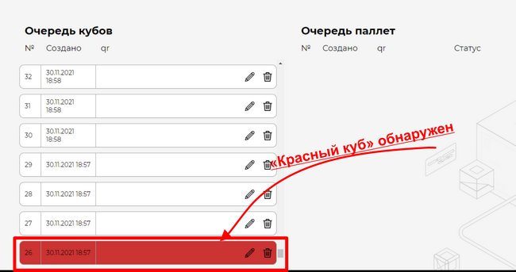
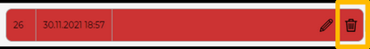

|
В случае обнаружения в системе "красного Куба", перед отправкой на склад, его необходимо пересобрать.

Если на упаковочном столе, собирается Куб, а в рабочем интерфейсе системы данный Куб отображается красным, его необходимо пересобрать. Для этого необходимо предпринять следующие действия:
1.Не запуская процесс обмотки Куба, вывезти помеченным красным цветом Куб с упаковочного стола на специально отведенную площадку пересборки Куба. В системе необходимо удалить данный Куб, нажав на кнопку удаления, которая находится поле описания Куба. Подтвердить действия; 
2.На площадке пересбора Куба необходимо его депаллетизировать, убрав всю обмотку с паллет; 3.В главном окне системы выбрать окно "Новый Куб" 4.Заполнить форму создания Нового куба
|